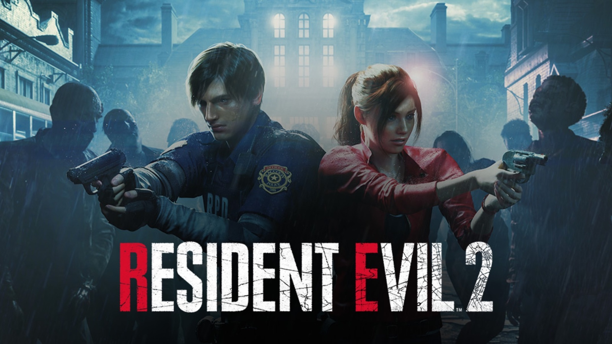

Описание
Resident Evil 2 (в Японии известна как Biohazard RE:2) — компьютерная игра в жанре survival horror, разработанная Capcom R&D Division 1 и изданная Capcom 25 января 2019 года для PlayStation 4, Xbox One и Windows. Ремейк одноимённой игры 1998 года. 
В 2022 году были выпущены версии для Nintendo Switch, PlayStation 5 и Xbox Series X/S. Выход версий для iOS, iPadOS и macOS состоялся 10 декабря 2024 года. Сюжетная кампания игры рассказывает о полицейском-новичке Леоне Скотте Кеннеди и студентке Клэр Редфилд, которые пытаются выбраться из города Раккун-сити, поражённого зомби-вирусом.
Сюжет
События игры происходят 29 сентября 1998 года, спустя два месяца после событий первой Resident Evil и её ремейка, в среднезападном американском городе Раккун-сити. В результате утечки T-вируса, новейшего биологического оружия, тайно разрабатываемого фармацевтической корпорацией Umbrella, практически все жители города превратились в зомби.
Персонажи
Линия Леона
Добравшись до полицейского участка, Леон узнаёт, что большая часть полицейских либо погибла, либо превратилась в зомби, за исключением пары полицейских, одного из которых на глазах у Леона убивают зомби, а второй, офицер Марвин Брана, оказался тяжело раненым. Он рассказывает Леону про тайный ход, через который тот попадает на подземные этажи. Там Леон сталкивается в бою с неизвестным мутантом, заражённым G-вирусом. Победив его, Леон выбирается на подземную стоянку полицейского участка, где встречается с некоей Адой Вонг, которая представляется агентом ФБР. Отказавшись объяснять происходящее ввиду конфиденциальности, она советует Леону поскорей убраться из города, после чего удаляется.
Разработка
На ранних этапах в Capcom обсуждалось множество вариантов. Создатели пробовали установить вид от первого лица и фиксированную камеру в духе «старой школы», но в конечном счёте решили, что управление от третьего лица работает лучше. И хотя не все фанаты приняли данное введение, после выставки E3 2018, реакция в целом была положительной. Продюсер Цуёси Канда заявил, что игра не будет поддерживать режим VR, поскольку это разрушит атмосферу ужаса. Бренд-менеджер Майк Лунн сообщил: Resident Evil 2 не является точным воспроизведением оригинала с современной графикой. По его словам, это новая часть, созданная на основе старой. Поэтому разработчики и не используют слово «ремейк». Ёсиаки Хирабаяси признался, что стоило большого труда сохранить некоторые сцены, например, бой с аллигатором, чтобы всё выглядело реалистично.
Выпуск
ервоначальный анонс игры состоялся 15 августа 2015 года на официальном YouTube-канале франшизы Resident Evil, где продюсер Ёсиаки Хирабаяси сообщил, что разработка проекта была официально одобрена